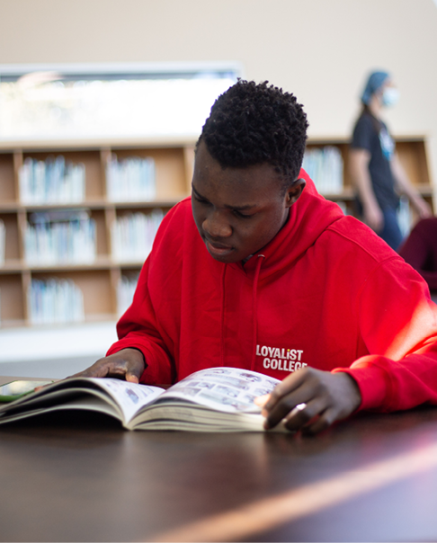
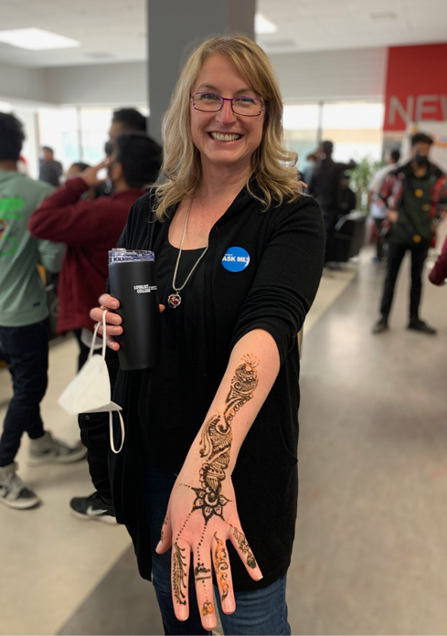
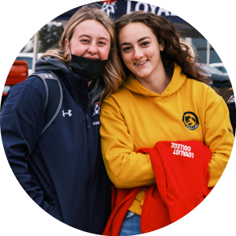
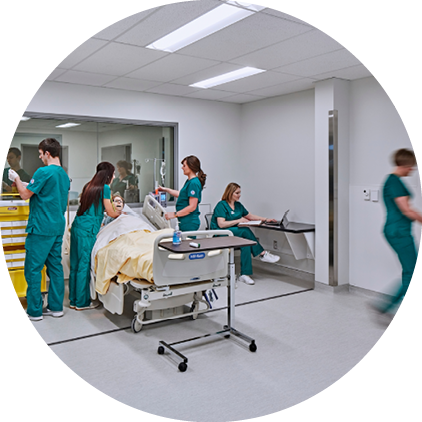
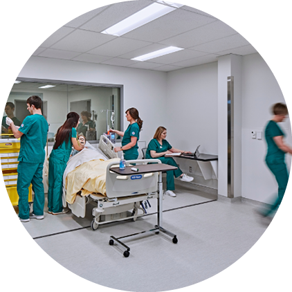

Student Life & Leadership
In the first year of the pandemic, we
quickly redesigned our Student Success
services to allow for seamless online
delivery. This past fiscal year, many of
these services were delivered in a hybrid
modality in order to meet students
where they are – whether that is onsite
for socially distanced labs, or remotely,
due to programs that continued to be
delivered online. As the College began
to bring students and employees back
to campus in Fall 2021, we were able
to continue delivering personalized
supports to meet the diverse needs of
students, reflecting our Destination
College vision.

Student Awards, Bursaries &
Scholarships
In the 2021–2022 academic year,
Loyalist College invested $1,180,000 in
awards, bursaries, and scholarships
to help relieve financial burdens and
remove barriers to education for new
and returning students. Loyalist Student
Government, on behalf of its student
members, contributed $155,000 for
needs-based financial assistance.
For September 2021, the College
awarded:
•77 Entrance Bursaries ($38,500)
•47 Financial Need Bursaries ($44,946)
For Winter 2022, the College awarded:
•26 Entrance Bursaries ($13,000)
•238 Financial Need Bursaries
($174,500)
Student Government, on behalf of
Loyalist College, also offered a $500
Student Government Needs Based
Bursary to 151 returning students
totaling $75,500, and 42 new students
for a total of $21,000.
In addition, funding from the Ministry
of Colleges and Universities, empowered
Loyalist College to present bursaries
to Indigenous and First-Generation
students.
For Fall 2021, the College awarded:
•19 Indigenous Bursaries ($9,500)
•20 First Generation Bursaries ($10,000)
For Winter 2022, the College awarded:
•23 Indigenous Bursaries ($16,100)
•13 First Generation Bursaries ($11,050)
On April 21, 2022 the Belleville Senators
announced
a $10,000 donation toward
an annual scholarship for four deserving
students at Loyalist College. Each
year, The Belleville Senators Varsity
Scholarship will distribute four awards
of $2,500 each, to put towards students’
education, and as recognition for their
athletic endeavours at the College and
their commitment to the Bay of Quinte
community.
On December 16, 2021, Loyalist College
announced
that it received a $15,000
donation from Eurithe Purdy to establish
The Al Purdy Memorial Bursary, in
honour of her late husband and beloved
Canadian poet, Al Purdy.
On November 26, 2021, Loyalist hosted
the Fall
Awards Ceremony where 284
students were congratulated as they
received a total of 352 awards, valuing
$174,205. On March 30, 2022, the College
hosted its Spring
Awards Ceremony
where 222 students were recognized.
Made possible through the support of
37 donors, including 56 endowed funds,
a total of $206,475 was awarded.
The 2021 Baycation
Classic Golf
Tournament was hosted at Trillium
Wood on September 17, 2021, and it
was a resounding success! The event
raised $26,660, which will benefit
students through awards, bursaries,
and scholarships, administered by The
Loyalist College Foundation.
In July 2021, Loyalist College announced
that it received a $20,000 donation
from the Bancroft Seniors Club 580 in
support of Personal Support Worker
(PSW) students. As part of the total
donation, $15,000 has been invested
into the creation of a Bancroft Seniors
Club 580 Endowment Fund to support
an annual bursary to benefit students
in the College’s Bancroft campus PSW
program. The remaining $5,000 has been
allocated for distribution over a fiveyear period to Bancroft PSW students
beginning in Fall 2021.
On July 19, 2021, Loyalist College
announced
that it partnered with the Belleville Police Service in support
of equitable and inclusive learning
opportunities for Indigenous students.
Through the College’s new Belleville Police
Service Indigenous Student Bursary,
one student of Indigenous heritage in the
College’s Police
Foundations program will
receive $2,500 toward their education.
Loyalist College was awarded a one-time
$25,000 grant through the Bell
Let’s Talk
Postsecondary Fund – Kickoff Grant as
part of the 2021 Canadian Mental Health
Week in May. Building on the College’s
mental health and well-being supports,
the investment will contribute to the
creation of a project assistant position
to implement the National Standard of
Canada for Mental Health and Well-Being
for Postsecondary Students.
Loyalist College announced on April 30,
2021, that Ashley Macdonald, a secondyear Paramedic student, was awarded
the Ontario Remembrance Scholarship
valued at $10,000.
During the Colleges and Institutes
Canada’s 2021 Virtual CONNECTION
Conference in April 2021, Loyalist College
General Arts and Science student Josh
Roberts received the CICan
Leadership
Excellence Award for Students. This
Award recognizes those who have made
an exceptional contribution within their
institution and the communities it serves.
Convocation
While we were unable to host our
traditional in-person Convocation
ceremonies to celebrate the Class of
2021 grads, Loyalist College hosted
Virtual
Convocation Ceremonies in June
2021.
We are thrilled that Loyalist College
will host its 55th Annual Convocation
celebrations in person once again,
with a series of ceremonies from June
6 – 11, 2022, that will bring together
graduates, friends, family, community
partners, alumni and College employees
to recognize an important milestone
in student life and development. The
College will also invite graduates from
the Class of 2020 and Class of 2021, who
were unable to walk across the stage due
to public health restrictions, to attend
a special ceremony of recognition on
June 11.
International Diversity
Loyalist College is a close-knit
community full of unique and talented
individuals coming together to build a
brighter future. Our diverse community
includes international students from
an evergrowing number of countries
around the world. As we continue to
prioritize a caring, supportive and
inclusive learning environment for
each and every student, the College
has developed new, responsive
programming and Student Life
initiatives to promote cross-cultural
understanding to ensure international
students feel welcome and included
in College life. From International
Orientation programming, to the
celebration of the Holi festival, to our
“Taste the World” initiative that featured
culturally inspired cuisine options, our
entire community is enriched by the
cultural exchange and vibrancy created
by our diverse student population.
Loyalist College in Toronto
The last fiscal year saw growth in our
partnership with Toronto Business
College at our Loyalist College in Toronto
(LCIT) campus, which recently moved to
Markham. Currently, there are over
2,500 students at LCIT with plans to
reach 3,000 students for the 2022 Fall
semester.
Bancroft Campus
Loyalist’s Bancroft campus, situated
in the heart of beautiful East Central
Ontario, is a vibrant and busy satellite
campus and a leader in developing
education and training programs to
Bancroft and the surrounding area.

The campus offers a range of diploma
and certificate programs through
distance learning, as well as Paramedic and Personal Support Worker programs,
delivered through learning on campus
and in the surrounding community.



 



 When the Government of Ontario
announced that publicly-assisted
colleges could offer standalone four-year
degrees in Nursing, Loyalist mobilized its
expertise in nursing education to launch
the region’s first standalone Honours
Bachelor of Science in Nursing degree
program. The new degree, which will
welcome its first cohort of nursing
students in September 2022, gives
local students a unique opportunity to
complete a four-year nursing degree
without needing to leave the Bay of
Quinte region. With numerous hospital
expansions currently underway in the
region, there is significant demand for
experienced medical staff. This growth
has led to an abundance of work
placement opportunities, as well as
strong pathways to employment after
graduation.
When the Government of Ontario
announced that publicly-assisted
colleges could offer standalone four-year
degrees in Nursing, Loyalist mobilized its
expertise in nursing education to launch
the region’s first standalone Honours
Bachelor of Science in Nursing degree
program. The new degree, which will
welcome its first cohort of nursing
students in September 2022, gives
local students a unique opportunity to
complete a four-year nursing degree
without needing to leave the Bay of
Quinte region. With numerous hospital
expansions currently underway in the
region, there is significant demand for
experienced medical staff. This growth
has led to an abundance of work
placement opportunities, as well as
strong pathways to employment after
graduation. Loyalist received $30,000 to support
an applied research project with
apollogreen, a global cannabis starter
plant supplier. With more than 600 cannabis strains,
apollogreen plans to increase quality
consistency across its young plants,
which it grows in bulk and sells to
cannabis product producers.
Loyalist received $30,000 to support
an applied research project with
apollogreen, a global cannabis starter
plant supplier. With more than 600 cannabis strains,
apollogreen plans to increase quality
consistency across its young plants,
which it grows in bulk and sells to
cannabis product producers. Our Science, Technology, Engineering,
Arts, and Math (STEAM) cluster aims
to enhance Loyalist College students’
critical thinking skills by recognizing and
analyzing the intersection of art, science,
technology, engineering and math.
Our Science, Technology, Engineering,
Arts, and Math (STEAM) cluster aims
to enhance Loyalist College students’
critical thinking skills by recognizing and
analyzing the intersection of art, science,
technology, engineering and math.


.png)


.png)